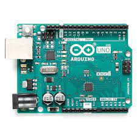
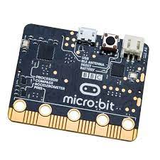
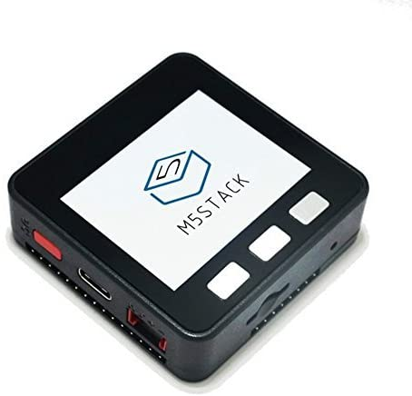
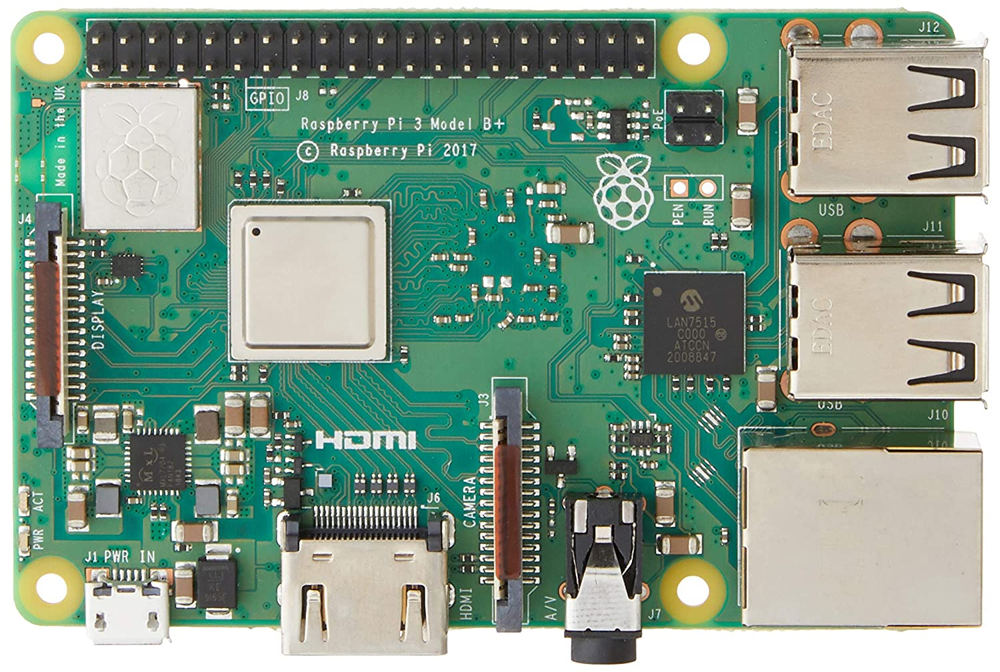
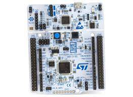

初心者にオススメのマイコン BEST5
みなさんはマイコンという言葉は聞いたことがありますか?
マイコンはいわゆる小さなコンピュータで，エアコンや自動車など様々な家電や製品に組み込まれています。
よく電子工作では，このマイコンを使っていろいろな作品を作るので初心者にもオススメのマイコンを紹介します。
マイコンとマイコンボードの違いについて
ここではマイコンとマイコンボードを同義として扱っていますが，実際にはマイコンボードに乗っているチップがマイコンで，周辺回路や入出力回路などを1枚の基板に乗せて手軽にマイコンを利用できるようにしたのがマイコンボードです。
- Arduino
- Micro::bit
- M5 Stack
- Rapsberry pi
- Nucleo
Arduino
電子工作の入門書でも度々登場する人気のマイコンです。Arduino IDEという統合開発環境が提供されており，C言語をベースとしたArduino言語を用いることで簡単に開発を行うことができます。
Atmel AVRというAtmel社が開発した8bitのAVRマイコンが搭載されており，16 MHzでの動作が可能になっています。Arduino UNOを始めとして入出力ポートの数やサイズが異なるArduino NanoやMegaといった種類もあり，作品の規模やサイズによって選択可能です。
Micro::bit
イギリスのBBCによって作られた教育用のマイコンです。Webブラウザだけでプログラミングを行うことができ，シュミレーションやブロックプログラミングなど子供でも簡単に制御できるように設計されています。
本体に様々なセンサーやLED，スピーカーなどが内蔵されている他，2台のmicro::bit間で通信したりなどがとても簡単にできます。 様々なキットや公式ドキュメントが充実しており，プログラミングは難しそうだけどとりあえずマイコンを触ってみたいならおすすめです。
なお，ARM社製のマイコンが搭載されておりMbedにも対応しているので物足りない人はMbedで開発することも可能です。
M5 Stack
IoT作品に適したマイコンです。内部にESP32というマイコンが使用されており，Wi-Fiに接続することが可能です。 開発環境も充実しており，Arduino IDEやその他のツールでも開発が可能になっています。
本体にはリチウムイオンバッテリーやスピーカー，OLEDディスプレイなども内蔵しておりセンサーをつなぐだけでIoTデバイスを開発できます。 似たようなマイコンで，クラウドIoTプラットフォームが付属したObnizというマイコンもあるのでおすすめです。
Raspberry pi
Raspberry piは元々は教育用に作られた小型のコンピュータです。通常のコンピュータと同様に，USBでキーボードやマウスをつなげたり，HDMIでディスプレイ出力などもできます。また，本体にはGPIOポートが内蔵されているため直接LEDやサーボーモータなどの制御も可能です。
これまで紹介してきたマイコンと違ってOSを書き込む必要がありますが，処理性能も高いので機械学習や画像認識などAIを使ったデバイスや，インターネットにつなげてIoTデバイスにしたり，さらにはサーバーとして運用したりなど可能性は無限大です。
Nucleo
NucleoはSTM Micro社のSTM32というチップが搭載されたマイコンです。Arduinoと違って，32bitでかつ動作クロックも高いので高速に処理を行うことができます。
開発環境として，C++のMbedという環境や純正のCube IDEといったものに対応しています。ロボコンなどでもよく使用され，PID制御などリアルタイムで応答が求められるような用途でも使用できます。
こちらのマイコンもArduino同様に様々なサイズやスペックが用意されているので，低消費電力やクロック数など用途に応じたものを選択できます。